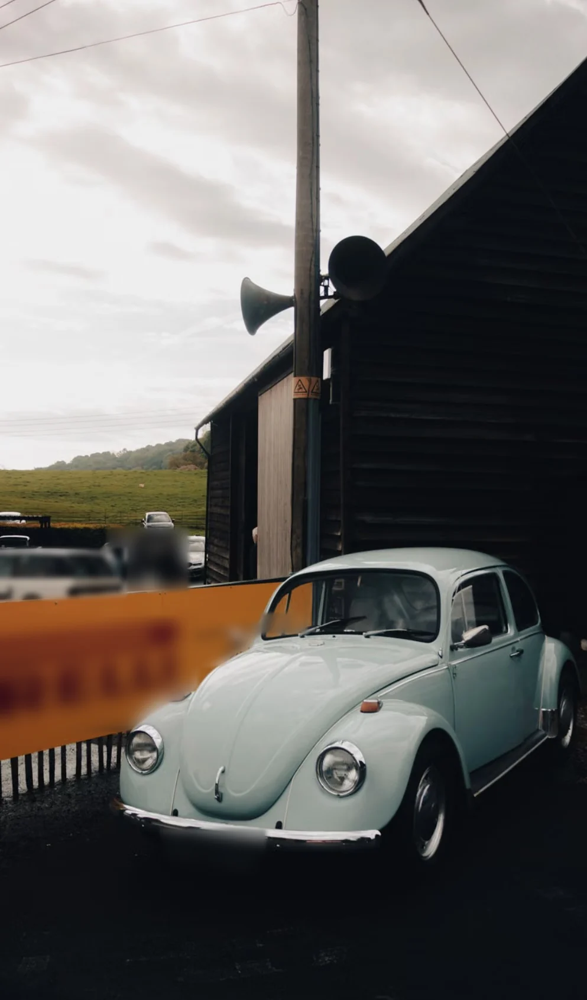
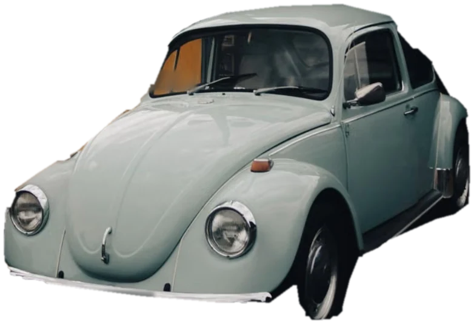
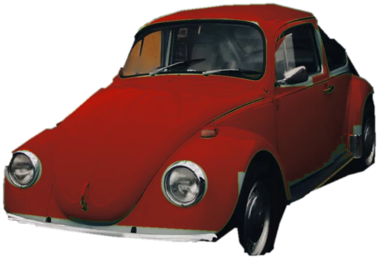
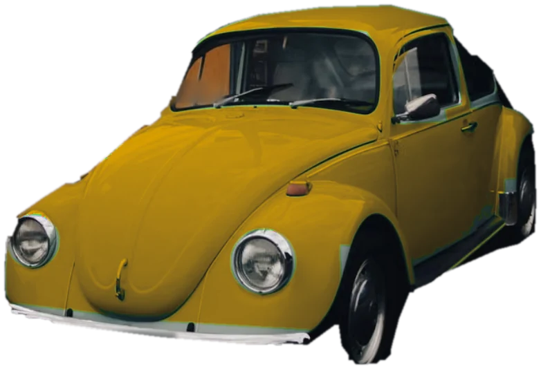
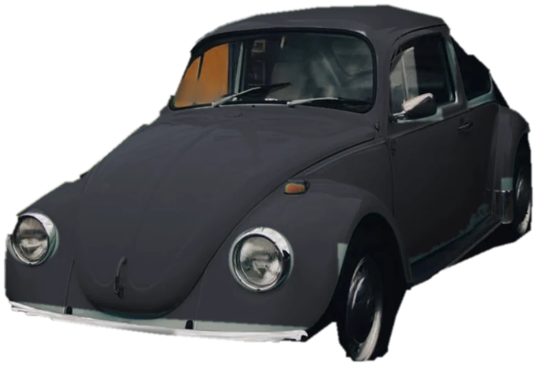

( Escenes )
Una foto que es mou
amb el scroll
Tres maneres de donar vida a una sola foto de producte, sense vídeos pesats. Fes scroll i prova-les. Aquí fan servir un Volkswagen Escarabat d'exemple; amb les teves fotos ho faig amb el teu producte.

( 01 · Detalls )
La càmera recorre
la foto
La foto Un sol enquadrament, tal com surt de la càmera.
El conjunt El producte s'acosta i passa a ser el protagonista.
Els fars Les formes i els acabats, de prop.
L'interior Fins on arriba la foto: el que es veu a través del vidre.
Les rodes Cada detall té el seu moment.
El resultat Tornem a veure-ho tot.

( 02 · Fondària )
Una foto plana
amb profunditat
Capes El cotxe i el fons es separen i es mouen a velocitats diferents. L'ull ho llegeix com a volum.



( 03 · Color )
El mateix producte,
en tots els colors
Blau menta El color de la foto original.
Vermell Només canvia la pintura; vidres, ferro i gomes es queden igual.
Mostassa Una galeria de colors sense repetir la sessió de fotos.
Grafit El client tria i veu el resultat a l'instant.
( I ara què? )